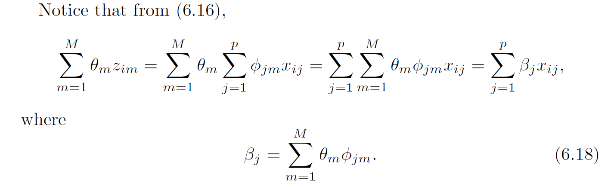
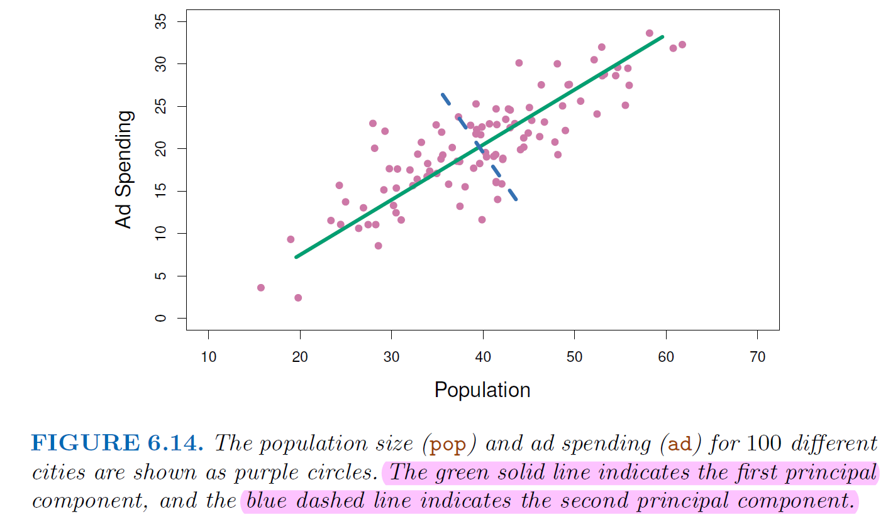
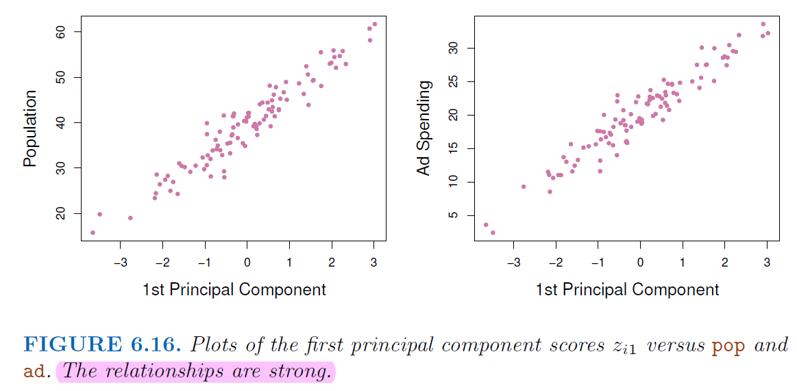
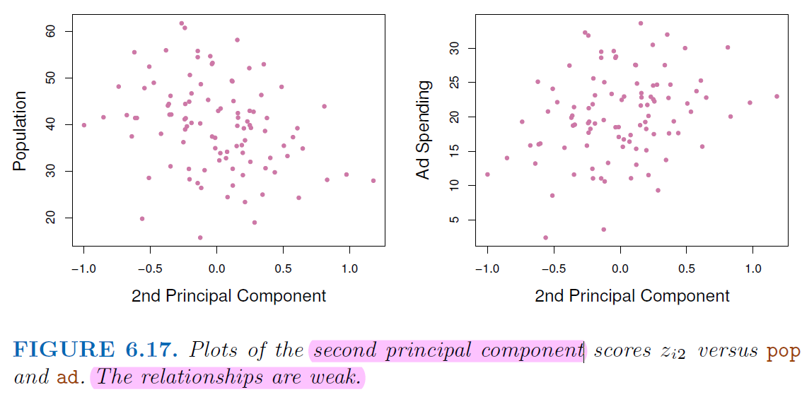

6. Dimension Reduction#
6.1. Dimension Reduction Techniques#
Dimension reduction techniques aim to reduce the number of predictors by transforming them into a lower-dimensional space while preserving most of the variability in the data.
Dimension reduction techniques are effective for dealing with
multicollinearityand high-dimensional dataThe goal is constructing \(M\) new predictors, which are linear combination of \(p\) original predictors, and use the new predictors to make predictions.
Let \(Z_1,Z_2,...,Z_M\) represent the new predictors with \(M<P\)
\(\phi_{m1},...,\phi_{mj}\) are some constants $\( Z_m = \sum_{j=1}^{p}\phi_{mj}X_j \)$
Then we fit * \(i=1,...,n\) $\( y_i = \theta_0+\sum_{m=1}^{M}\theta_mZ_{im} + e_i \)$ 
But may result in less interpretable models compared to subset selection and shrinkage methods.
6.1.1. Principal Component Analysis#
PCA transforms the original predictors into a new set of uncorrelated variables called principal components.
These components are ordered by the amount of variance they explain, allowing for dimensionality reduction by retaining only the most important components.

The first component summarize the most information from these two features

Not many information left on the 2nd component

6.1.2. Partial Least Squares (PLS)#
PCR assumes the principle components from predictors might have the best performance on dependent variable prediction (unsupervised way)
This assumption might wrong
We do not use the information from dependent variable to supervise the identification of the principal components.
PLS is also a dimension reduction technique
But unlike PCR, PLS identify new features that not only approximate the old features well, but also that are related to the target variable
Steps:
Standardize \(p\) predictors
Construct simple Bivariate linear regression to get \(\theta_1,...,\theta_p\)
Compute the first direction \(Z_1=\sum_{j=1}^p\theta_1jX_j\)
PLS places the highest weight on the variables that most strongly related to the response.